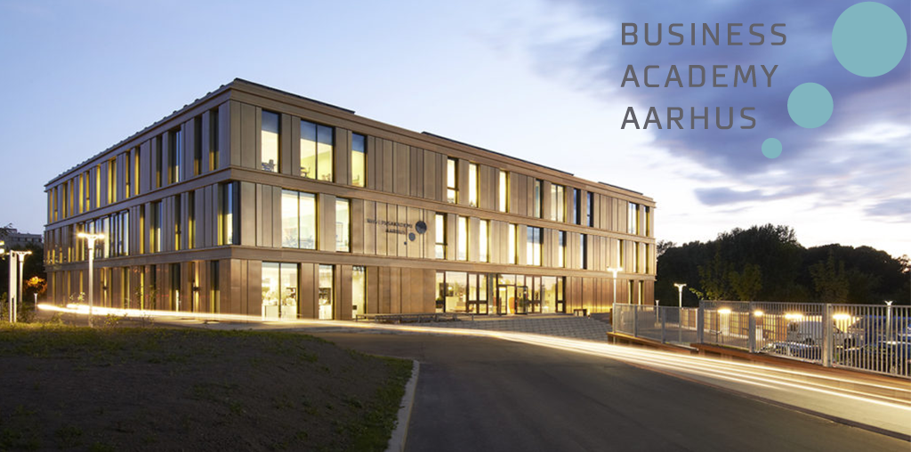

Acasă
Acasă Țări
Țări Catalog
Catalog Galerie foto
Galerie foto Experiente
Experiente Despre
DespreBusiness Academy Aarhus



Descriere
Business Academy Aarhus, Universitatea de Stiinte Aplicate, este o institutie profesionala de invatamant superior. Institutia ofera o varietate de programe la nivel de diploma Academy Profession (AP) si de diploma de licenta (BA). Programul corespunzator diplomei AP dureaza intre 2 si 2 ½ ani si poate fi urmat de un program de completare BA de 1 ½ ani pentru obtinerea diplomei de licenta complete. Programul corespunzator diplomei de licenta dureaza 3 ½ ani. Toate programele sunt acreditate de Ministerul Danez de Stiinte, Inovatie si Invatamant Superior.
Academia este strans legata de sectorul de activitate, avand drept scop stabilirea unei legaturi intre studiile universitare si companiile din sectorul privat. De aceea, studentii sunt pregatiti sa rezolve probleme concrete din viata reala prin imbinarea teoriei si a practicii. Toate programele includ un stagiu de practica obligatoriu, intr-o companie din Danemarca sau din strainatate, cu o durata intre 2 ½ și 10 luni.
Informații generale
Tara: Danemarca
Limba de predare: engleza
Ani de studiu: Bachelor: 2 - 3,5
Inceput an: septembrie, februarie
Burse: Nu
Campusuri: Aarhus
Aeroporturi: Aarhus
Cazare: 320-700€
Programe de licență:
Financial Management and Services
Programe de master:
Agricultural and Environmental Management
Chemical and Biotechnical, Food or Process Technology
Digital Concept Development
AP Degree:
Chemical and Biotechnical Science
Environmental Management
IT Network and Electronics Technology
Marketing Management
Multimedia Design and Communication
Bachelor Top-up:
Agricultural and Environmental Management
Chemical and Biotechnical, Food or Process Technology
Digital Concept Development
Innovation and Entrepreneurship
International Sales and Marketing Management
Product Development and Integrative Technology
Software Development
Web Development